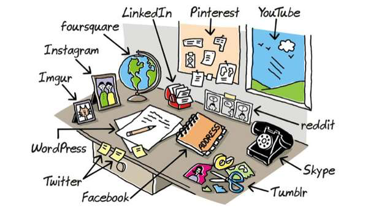

When I first started reading this article, I was confused. I had forgotten that the article was written in 1945 and the internet had yet to exist for a couple centries and that information as not as easily spread back then. I found it a little humorous when Bush notes that "Mendel's concept of the laws of genetics was lost to the world for a generation because his publication did not reach the few who were capable of grasping and extending it..." I guess I found this quote amusing because the idea that such a significant and historical discovery could not attract much attention simply because information was not easily spread. In addition, I have studied Mendel's experiments in science classes and I had assumed that his discoveries must have been popular in his time. Furthermore, i found this reading interesting but a little hard for me to fully grasp the concepts presented. However, I did find the memex concept interesting and I instantly compared it right away to storing files on a computer. It is kind of crazy to think about how much Bush's world is a completely different world than what we live in today.

I found this article very interesting as not only did I learn about the concept of Universality as well as other concepts, but also because I grew up when social media apps were born. I am grateful for at least not experiencing social media in elementary school like so many kids nowadays, but I did get Facebook, Snapchat, and Instagram in middle school. It is actually kind of hilarious how little I actually did use the sites, but the point is, I feel that I can put myself in 2010 when this article came out. I can remember when there was no real social media influencers, a time where you were happy to get 15 likes on Instragram. I know that is not the whole point of the article, but my point is how much thinsg have changed in the last ten years. For example, Berners- Lee writes "A related danger is that one social-networking site- or one search engine or one browser- gets so big that it becomes a monopoly, which tends to limit innovation." I am no expert on social media, but I believe Facebook owns most social media apps. Facebook became a monopoly, but even so, has it actually pervented better apps? Furthermore, another difference between 2010 to 2020 is the fact that we can all share links, posts, videos, etc. to each otehr with no problem, but 10-13 years ago it was an issue. Like I said, I know these were not the main arguements in the article, but these two things stood out to me in a humorous manner of how "simple" and "innocent" social media was back then.

>What are your thoughts on the articles?